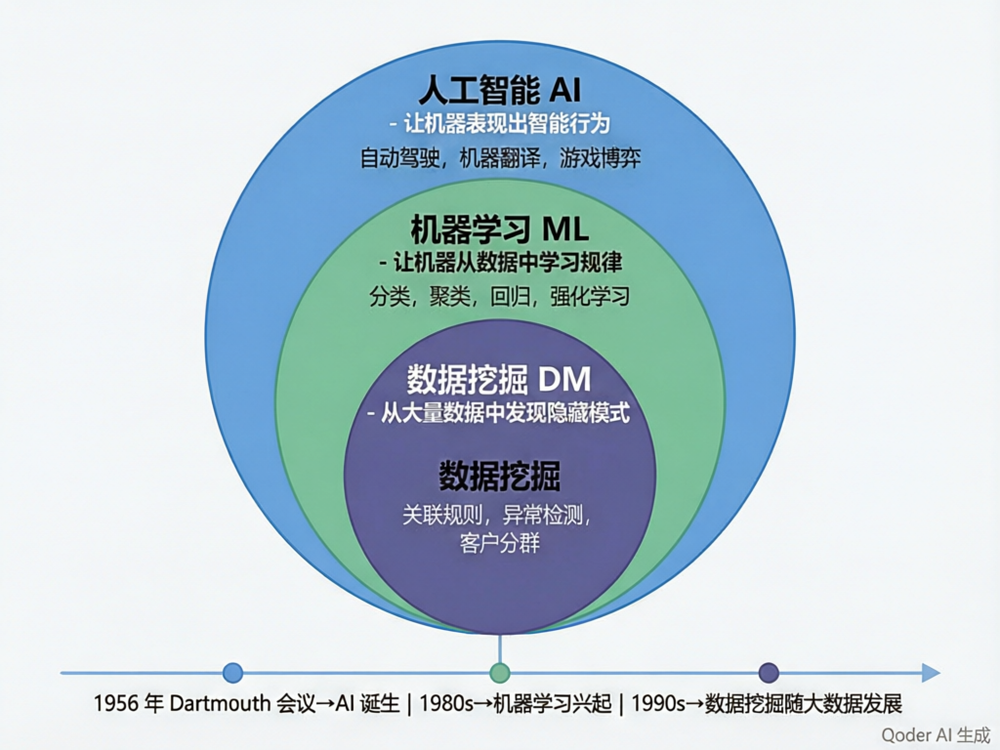
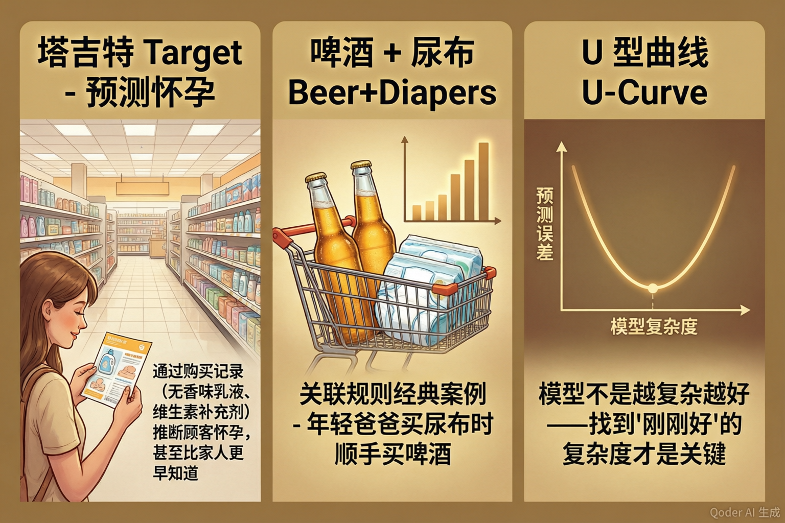
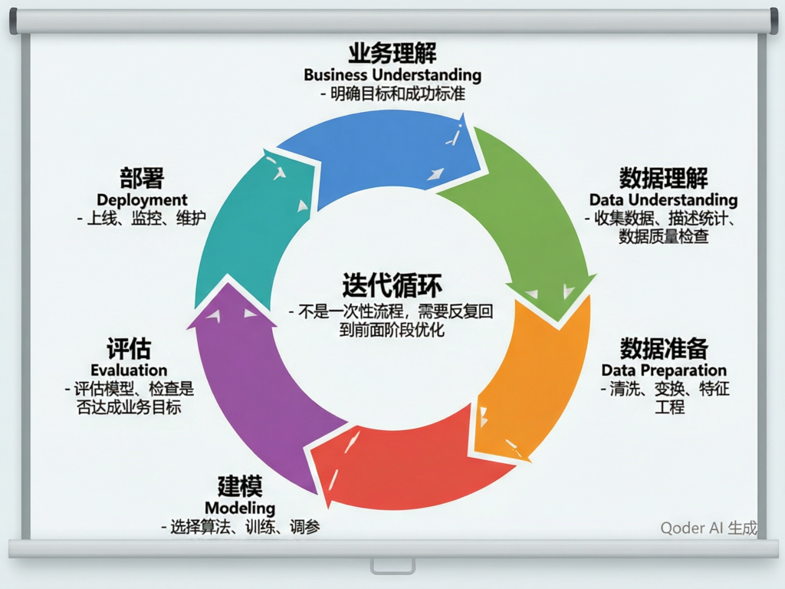
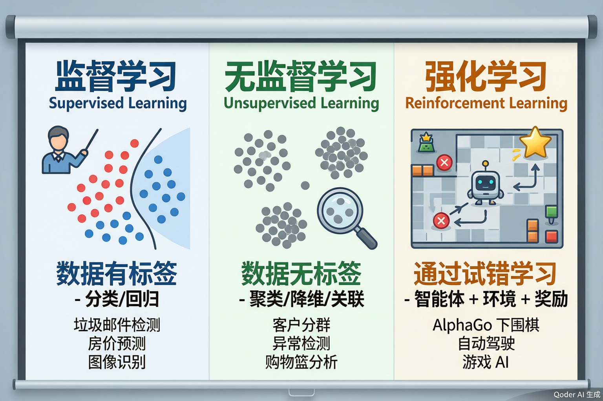

数据挖掘概述
从数据到知识，从知识到决策——走进人工智能与数据科学的世界
数据爆炸
全球每天产生约 328.77 EB 数据（1 EB = 10亿 GB）。微信每天发送 450 亿条消息，淘宝每秒处理数万笔交易。数据量已经大到人类无法手动分析了。
技术推动
存储成本大幅下降（1TB硬盘不到300元）、计算能力指数增长（GPU/TPU）、分布式计算框架成熟（Hadoop/Spark）——"算得起"也"存得下"了。
应用需求
企业渴望从数据中洞察客户行为、优化运营、预测趋势。数据不再是"成本中心"而是"利润中心"——数据驱动的决策正在取代直觉驱动的决策。
2025年全球数据量
2 ZB
33 ZB
181 ZB
预计 600+ ZB
1 ZB = 1万亿 GB，相当于约 2500 亿部高清电影

人工智能 AI
最外层——让机器表现出智能行为的总称。包括推理、规划、自然语言处理、计算机视觉、机器人等。目标是"让机器像人一样思考和行动"。
1956年达特茅斯会议正式提出
机器学习 ML
中间层——AI 的子领域，专注于让机器从数据中学习规律，而不需要显式编程。包含分类、回归、聚类、强化学习等。
1980s 开始蓬勃发展
数据挖掘 DM
最内层——ML 的实际应用分支，强调从大规模真实数据中发现隐藏模式。更关注商业价值、工程流程（如CRISP-DM）、数据质量。
1990s 随大数据兴起
🧠 课堂小测

塔吉特 Target：比父亲更早知道女儿怀孕
美国零售巨头塔吉特通过分析顾客的购买记录变化（从普通乳液切换到无香味乳液、开始购买维生素补充剂等），建立了"怀孕预测模型"。一位父亲收到婴儿用品优惠券后愤怒投诉，几天后才发现女儿确实怀孕了——模型比他更早知道。
💡 启示：看似无关的购物行为背后隐藏着深刻的生活事件模式。
啤酒+尿布：关联规则的开端
沃尔玛分析POS交易数据时发现：周五傍晚，啤酒和尿布经常出现在同一张购物小票上。原因是年轻爸爸们被派去买尿布时，顺手给自己犒劳一箱啤酒。沃尔玛据此调整了货架布局。
💡 启示：数据能发现人类直觉想不到的关联——这正是关联规则的价值。
U型曲线：模型不是越复杂越好
在机器学习中，模型复杂度与预测误差呈U型关系：太简单的模型欠拟合（高偏差），太复杂的模型过拟合（高方差）。最优的模型在U型曲线的谷底——"刚刚好"的复杂度。
💡 启示：更多的参数、更深的网络不一定带来更好的效果。简单模型 + 好特征常常胜过复杂模型 + 差特征。

① 业务理解
明确要解决什么问题、成功标准是什么。这是最重要的一步——方向错了，后面全白做。
例：目标不是"建一个准确率最高的模型"，而是"找出最可能流失的客户，把流失率降低10%"。d
② 数据理解
收集数据、描述性统计、数据质量检查。数据在哪？够不够？脏不脏？有没有系统性偏差？
工具：describe()、info()、可视化分布图。
③ 数据准备
清洗、变换、特征工程。填缺失值、标准化、编码、构造新特征。通常占整个项目60%-80%的时间。
④ 建模
选择算法、训练、调参。模型训练本身只占10%-20%的时间——前面数据准备好了，这步很快。
⑤ 评估
模型效果是否达到了业务目标？混淆矩阵、准确率/精确率/召回率、与基线对比。不达标就回到前面迭代。
⑥ 部署
模型上线、监控效果、定期更新。部署不是结束——模型会"老化"，需要持续维护和迭代。

三种学习范式
监督学习
数据有标签，目标：学会从特征到标签的映射
分类：垃圾邮件检测
回归：房价预测
无监督学习
数据无标签，目标：发现数据的内在结构
聚类：客户分群
关联：购物篮分析
降维：PCA
强化学习
智能体与环境交互，通过奖励/惩罚试错学习
AlphaGo、自动驾驶
游戏AI、机器人控制
大数据的"4V"特征
Volume 量大
数据体量巨大——TB、PB甚至EB级别。传统数据库无法处理，需要分布式存储和计算。
Velocity 速度快
数据产生和流入的速度极快——社交媒体实时更新、传感器每秒百万条、交易系统毫秒级响应。
Variety 多样
数据形式多样——结构化（数据库表格）、半结构化（JSON/XML）、非结构化（文本/图片/视频/语音）。
Value 价值密度低
大量数据中真正有价值的信息可能只占很小比例。数据挖掘的任务就是从"沙子里淘金"。
🧠 课堂小测
CodeBuddy
AI 智能编程助手，能在 IDE 中实时补全代码、解释代码逻辑、生成单元测试、Debug。支持 Python、Java、JavaScript 等主流语言。
场景：写数据清洗代码时，输入注释描述需求，CodeBuddy 自动生成对应的 Python 代码。
WorkBuddy
AI 工作助手——你的桌面级智能代理。能读写文件、执行命令、搜索信息、创建文档，像一个全能的AI实习生帮你完成各类任务。
场景：让 WorkBuddy 帮你整理数据文件、写分析报告、生成可视化图表。
IMA
智能知识库与文档助手——帮助你快速检索、整理和理解技术文档、论文、代码库。让"查资料"不再浪费时间。
场景：遇到不熟悉的算法时，让 IMA 快速找到并总结相关文档的核心要点。
一个典型的AI辅助数据挖掘工作流
理解业务
查算法文档
写数据清洗
特征工程代码
训练模型
调参·评估
生成报告
交付成果
pandas.read_csv()
describe() / info()
直方图/散点图/热力图
LinearRegression→R²
示例数据：学生成绩影响因素
| 学生ID | 学习时间(h) | 睡眠时间(h) | 作业完成率 | 出勤率 | 期末成绩 |
|---|---|---|---|---|---|
| 001 | 8.5 | 7.0 | 95% | 98% | 88 |
| 002 | 3.2 | 5.5 | 60% | 75% | 62 |
| 003 | 6.0 | 8.0 | 85% | 90% | 78 |
| 004 | 10.0 | 6.0 | 98% | 100% | 95 |
| 005 | 2.0 | 9.0 | 40% | 60% | 45 |
| 006 | 7.5 | 7.5 | 90% | 95% | 85 |
关键发现
① describe() 揭示了数据的中心趋势和离散程度——学习时间均值 6.2h，标准差 3.1h（差异较大）。② 相关性热力图显示学习时间与期末成绩相关系数 0.82（强正相关），而睡眠时间与成绩相关系数仅 0.15（弱相关）。③ 散点图发现学习时间 vs 成绩呈近似线性关系，但作业完成率 > 85% 之后，成绩的提升趋于平缓。④ 基线线性回归仅用学习时间一个特征预测成绩，R² = 0.67——说明学习时间能解释 67% 的成绩变异，还有 33% 来自其他因素。
🚀 背景与动机 → 数据爆炸(181ZB/2025) + 技术推动(GPU/云) + 商业需求 → 数据挖掘应运而生
↳ 🎯 核心概念 → AI ⊃ ML ⊃ DM → 1956年AI诞生→1980s ML→1990s DM→2020s大模型时代
↳ 📖 三大经典 → 塔吉特(预测怀孕) · 啤酒尿布(关联规则) · U型曲线(偏差方差权衡)
↳ 🔄 CRISP-DM → 业务理解→数据理解→数据准备→建模→评估→部署 → 迭代循环
↳ 🧭 技术全景 → 监督/无监督/强化 · 结构化/非结构化 · 4V(量/速/多样/价值)
↳ 🤖 AI工具链 → IMA(知识) + CodeBuddy(编码) + WorkBuddy(工作) → 全流程辅助
↳ 🧪 动手实验 → 读入→描述→可视化→基线回归 → R²=0.67 → 数据说话
1. 数据挖掘不是"用算法跑数据"——它是一个从业务理解到部署监控的系统工程，CRISP-DM 六阶段方法论是业界实战的结晶。
2. AI、ML、DM 三者不是同义词——AI 是梦想，ML 是方法，DM 是将 ML 方法应用于真实大数据的工程实践。
3. 数据挖掘的三大经典案例告诉我们：看似无关的数据背后有深刻的模式，模型不是越复杂越好，数据+特征 > 算法。
4. 现代数据挖掘有了 AI 工具的加持——IMA 帮理解、CodeBuddy 帮编码、WorkBuddy 帮交付——但业务理解和批判性思维仍然是人类不可替代的核心能力。
这是「高中AI课堂」系列的开篇——从全局视角建立数据挖掘的认知框架。后续课程将逐一深入：分类与决策树、贝叶斯与神经网络、聚类分析、关联规则挖掘、特征工程……每个主题背后，都离不开今天学到的这些基础概念。希望这80分钟帮你建立了"数据挖掘是什么、为什么、怎么做"的完整认知地图。